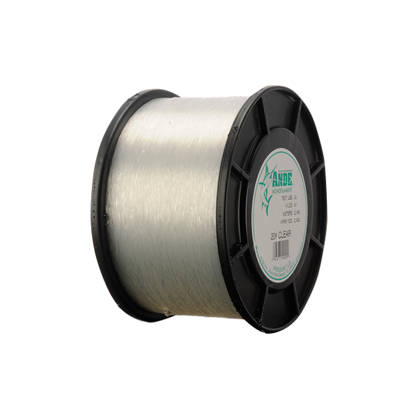

Ande Premium Monofilament
Diameter chart, reel capacity & backing guide

ANDE's standard-production Premium mono, checked here in Clear at 6-30 lb. The verified 1/8- and 1/4-pound weight spools contain different yardages at each test; the spool weight is not its line breaking strength.
- Construction
- Medium-soft monofilament
- Listed strengths
- 6-30 lb
- Line type
- Monofilament main line
Standard Premium, not Tournament
Premium is the general-purpose mono in ANDE's range, described by the manufacturer as medium-soft. Use it when a mono working line suits your fishing, but do not substitute its test/diameter relationship for ANDE Tournament. The 10 lb Premium size is 0.30 mm and comes in checked 675- or 1,350-yard packages, enough supply to make backing and multiple-fill planning worth considering.
How much ANDE Premium will fit?
Calculated estimates, not measured fills. Stop at the reel manufacturer's fill level even if some line remains.
Ande Premium Monofilament diameter chart
Premium Clear 6-30 lb, limited to the source-matched 1/8- and 1/4-lb weight spools. Unreviewed bulk sizes and other ANDE formulations are not implied.
| Strength | Inches | mm | Spools (yd) |
|---|---|---|---|
| 0.010 | 0.250 | 925, 1850 | |
| 0.011 | 0.275 | 787, 1575 | |
| 0.012 | 0.300 | 675, 1350 | |
| 0.014 | 0.350 | 500, 1000 | |
| 0.016 | 0.400 | 375, 750 | |
| 0.018 | 0.450 | 300, 600 | |
| 0.020 | 0.500 | 250, 500 | |
| 0.022 | 0.550 | 200, 400 |
Choosing your ANDE Premium strength
Select Premium test for your rod and presentation first. At 6-12 lb the checked diameters run 0.25-0.35 mm; at 15-30 lb they run 0.40-0.55 mm.
A 1/4-pound retail spool contains more line than a 1/8-pound spool of the same test. Neither package label is the line's breaking-strength rating.
Choose heavier mono only where the tackle and fishing call for it. A large bulk supply does not make thick line suitable for a compact spinning spool.
This is a source-based specification and setup guide, not a hands-on review or comparative performance test.
Want a guided recommendation?
Continue in the Setup WizardSame pound test, different diameters
At your selected strength
Loading diameter comparisons...
What changes with another line?
Nearby diameters in the line database
| Line | Strength | Inches | Difference |
|---|---|---|---|
| Loading line database... | |||
Backing, working line & leaders
Read test and spool weight separately
A 10 lb line on a 1/8-pound spool has a checked length of 675 yards; moving to a 1/4-pound spool gives 1,350 yards without changing diameter.
Allocate a bulk spool across reels
Estimate each reel's required working length before dividing the package. Keep allowance for knots, trimming and line left on the supply spool.
Keep a manageable fill
Wind evenly and stop at the reel's recommended clearance. Extra line from the large package can be retained for another fill.
How Much Fits on These Reels?
Estimated full-spool capacity for the ANDE Premium strength selected above, with no backing. These are calculated examples, not physical tests or recommendations for every pairing.
Loading capacity estimates...
ANDE Premium questions, answered
Is 1/8 lb the strength of the line?
No. It describes the weight-spool size. The selected 6-30 lb test is a separate property.
Is Premium the same as ANDE Tournament?
No. Tournament is made for the manufacturer's stated line-class purpose and has its own strength range and diameters.
Why are only two package weights shown?
These are the exact current variants checked against the chart. One larger 8 lb package has conflicting yardage metadata and is deliberately not included.
Specifications & sources
Checked September 13, 2026 against the official product information linked below. Current per-variant mm values match the official Premium/Ghost chart. Published inch/mm pairs are retained with normal rounding. Offered specifications do not establish current stock; this is not an independent diameter measurement.
Calculations use the catalog's listed inch diameters. Published inch and millimeter values may differ slightly because of rounding.
- Ande official product information Premium Clear original mainline, verified 6-30 lb in 1/8- and 1/4-lb weight spools. Current per-SKU mm/yardage metadata agrees with visually checked published chart for this package subset.
- Ande official supporting source Premium Clear original mainline, verified 6-30 lb in 1/8- and 1/4-lb weight spools. Current per-SKU mm/yardage metadata agrees with visually checked published chart for this package subset.